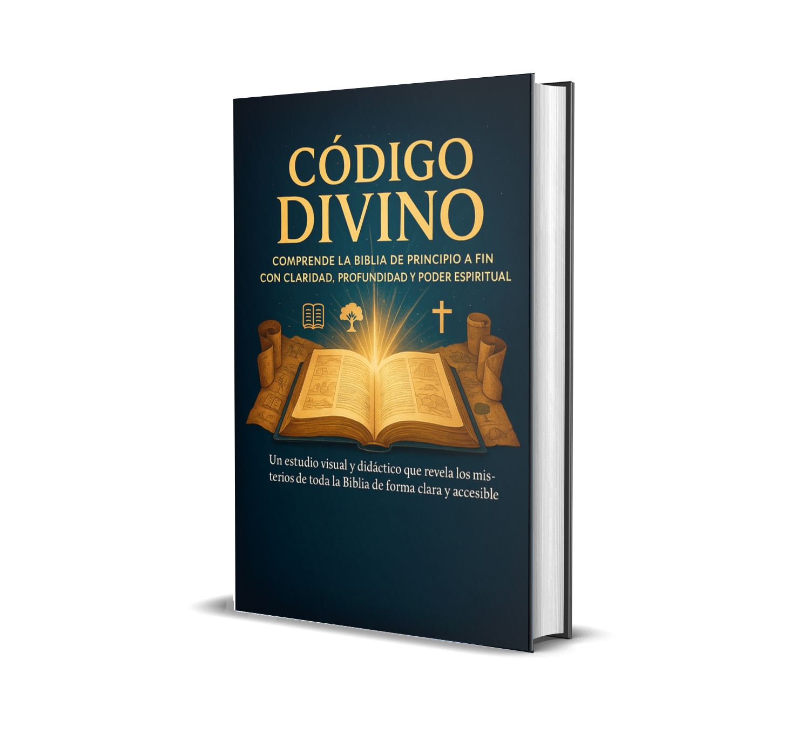
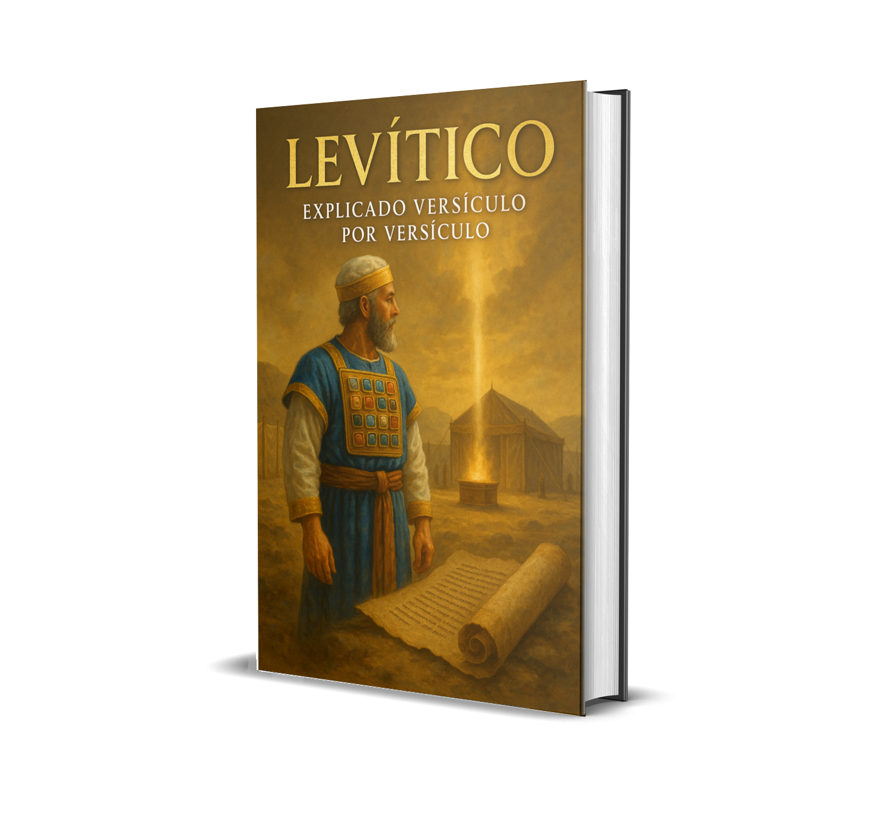
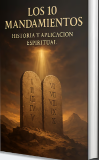
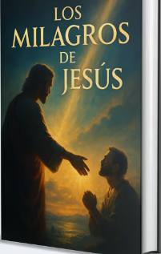
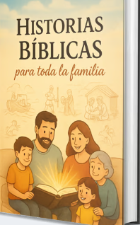
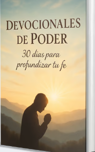
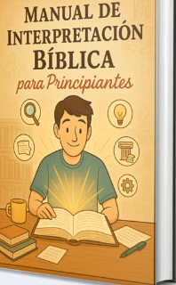

Deja de "Leer" la Biblia.
Empieza a Entenderla.
Descubre el método visual que más de 4,000 cristianos están usando para transformar un estudio bíblico confuso en una profunda conexión diaria con Dios. Acceso vitalicio e inmediato.





🔒 Pago 100% seguro · Acceso inmediato
Tienes una Biblia en tu mesa de noche que no has abierto en un mes. O peor: la abres, lees un capítulo y dos horas después no recuerdas nada.
Si esto te suena familiar, no estás solo. Y la sensación viene acompañada de esto, ¿verdad?
"Y las repetirás a tus hijos, y hablarás de ellas... cuando te sientes en tu casa, y cuando andes por el camino."
Deuteronomio 6:7El problema no es tu falta de fe o disciplina. Es la falta de un método.
Por eso creamos CÓDIGO DIVINO: una biblioteca espiritual completa que te lleva de la mano con bosquejos visuales, ilustraciones impactantes y explicaciones claras, diseñadas para que cualquiera pueda entender y aplicar la Palabra de Dios como nunca antes.
TODO LO QUE RECIBES HOY
Tu biblioteca de estudio bíblico visual
170 bosquejos temáticos. Domina un libro entero de la Biblia, extrayendo lecciones de liderazgo y conquista.
Comprende los fundamentos de la fe con una claridad que nunca antes has tenido.
Descubre la historia de la liberación y el pacto de Dios de una forma que te cautivará.
Desbloquea uno de los libros más difíciles y aplica sus verdades espirituales hoy.
Construye el hábito de la oración diaria de forma simple e intencional.
🎁 AL UNIRTE HOY, RECIBES GRATIS
5 bonos exclusivos

Para aplicar los pilares de la ley de Dios de forma relevante en el siglo 21.

Visualiza el contexto y el poder de cada milagro para fortalecer tu fe.

El recurso perfecto para enseñar a tus hijos la Palabra de Dios de forma memorable.

Para profundizar tu intimidad con Dios de forma práctica y guiada.

La joya de la corona. Aprende a interpretar las Escrituras por ti mismo, con confianza y sin caer en errores comunes.
Accede a la biblioteca completa ahora
Todo el material, con acceso vitalicio
💱 Se paga en tu moneda local — sin transferencias ni tarjeta internacional
SÍ, QUIERO MI ACCESO AHORASí, leíste bien. Todo el material, con acceso vitalicio, por menos de lo que cuesta un almuerzo.
Tu Compra Está 100% Libre de Riesgo
Garantía Incondicional de 7 Días
Mi promesa es simple: accede a todo el material, explora los bosquejos, lee las guías y usa los bonos durante 7 días completos.
Si al final de ese período no sientes que tu estudio bíblico se ha vuelto más claro, profundo y práctico, simplemente envíame un correo y te devolveré el 100% de tu dinero. Sin preguntas, sin demoras y sin resentimientos.
Si este material no transforma tu forma de leer la Biblia, yo no merezco quedarme con tu dinero.
⚠ ATENCIÓN: OFERTA DE LANZAMIENTO
Este precio de $9,90 es una condición especial para celebrar el lanzamiento de CÓDIGO DIVINO y permitir que miles de cristianos accedan a él. Sin embargo, para poder seguir añadiendo nuevos libros y materiales a la biblioteca, este precio será reajustado pronto.
Asegura tu acceso vitalicio ahora antes de que el valor aumente.
❓ Preguntas Frecuentes
Tu conexión con Dios no debería sentirse confusa.
Únete a más de 4,000 cristianos que ya están estudiando la Biblia con claridad, todos los días.
QUIERO EL CÓDIGO DIVINOCompra segura · Garantía de 7 días · Entrega inmediata por email